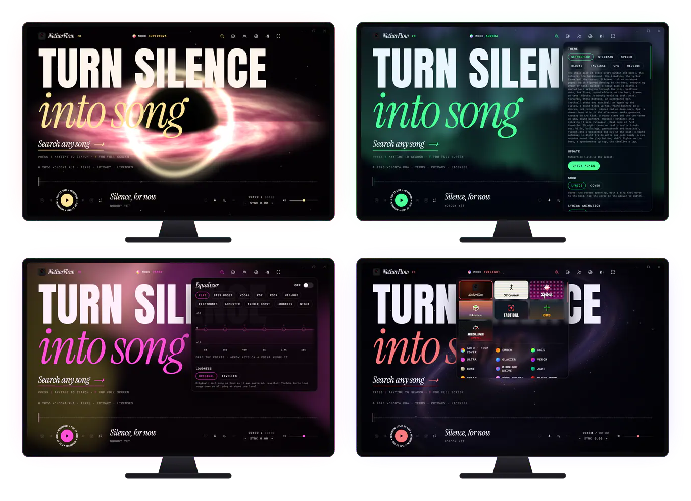
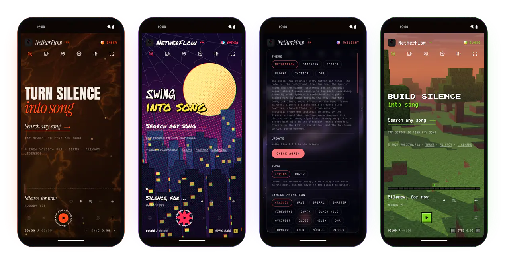
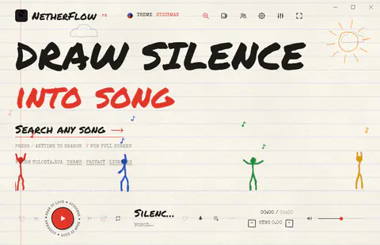
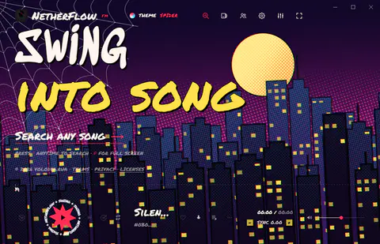
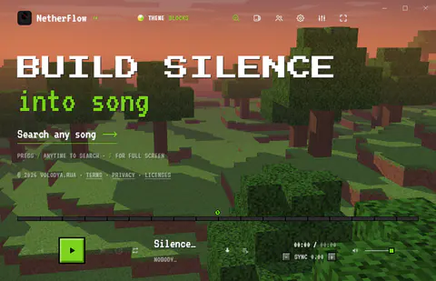
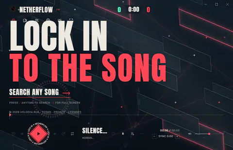
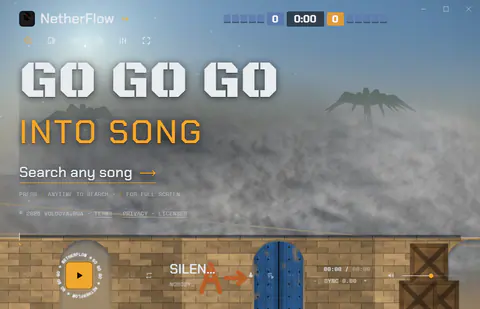
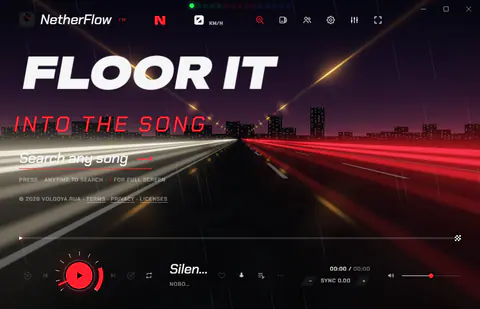

NetherFlow: turn silence into song
[ Hold to play ]A free music player for Windows and Android. Full songs, lyrics that land word by word, and backgrounds that move with the music.
FRACTAL
Your music, finally seen.
Search any song and it plays in full. The lyrics line up to the exact recording, the background takes its colours from the cover, and the whole screen moves with the beat.

Full songs, anything
Songs, artists, albums, typos fixed as you type. Autoplay keeps going with songs like the one playing.
At their real loudness
YouTube turns loud songs down. NetherFlow gives that back, with an equalizer and a booster on top.
Yours, offline
Save one song or a whole playlist. Import playlists of any length from Spotify, Apple Music or YouTube.
And in your pocket.
The same app on Android 7.0 and up, with a home-screen widget and the lyrics on your lock screen.

Every word lands right on the beat. You don't read it, you feel it. Turn silence into song.
Synced to the exact recording that's playing, with 19 animations from Spiral to Shatter, 13 font pairs and a karaoke mode. On Windows, Extreme lyrics cut like a music video.
One tap.
A whole new app.
Notebook paper and ink, stick figures dancing to the beat, everything drawn by hand.
Windows · Android





No account. No ads. No catch.
Everything else it does, in running order. Side A is for you, Side B is for your people.
Side AListening & lyrics
- A1Smooth mixPC · Phone
Songs blend into each other like a DJ set, right on the beat.
- A2Autoplay that learnsPC · Phone
When the list runs out it keeps going: same language, same era, learning from what you skip.
- A3Extreme lyricsPC
58 looks, 1,595 emoji, and the official music video playing behind the words.
- A4SingPC · Phone
Karaoke mode: the voice turned down as far as you want, the lyrics big.
- A5Your statsPC · Phone
Minutes, streaks, top songs, artists and genres, and a card to share.
Side BTogether & everywhere
- B1Listen togetherPC · Phone
Up to 10 people hear the same song at the same moment. End-to-end encrypted, no account.
- B2Phone ↔ PC syncPC · Phone
Liked songs, playlists and stats over your own Wi-Fi, with a 6-number code.
- B3Now-playing islandPC
A little player at the top of your screen, over every app.
- B4Lock-screen lyricsPhone
A home-screen widget, and the lyrics in the notification and on your car's display.
- B5Draws nothing when hiddenPC · Phone
Minimized or in the background, it renders nothing at all. Easy on your battery.